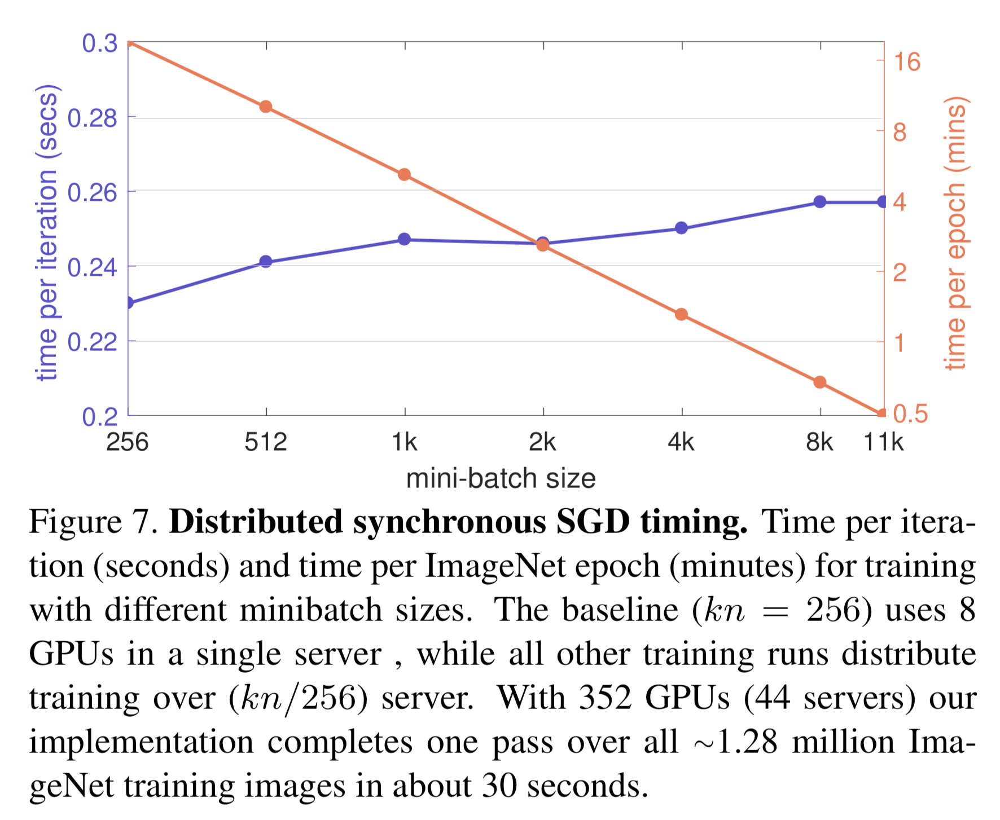

Experiments¶
In Mathematical underpinnings, we showed the method we proposed should require far fewer model updates than SGD while requiring no more floating point operations. The number of model updates can be a good proxy for time spent training, at least with a particular setup of a distributed system [imagenet-1hr].
This page will show experimental results that show using the proposed batch size method results in spending less time training ML models. This will require a particular configuration of a distributed system.
Synthetic experiments¶
To be updated shortly with experimental results that confirm Mathematical underpinnings. These experiments will be improved versions of the experiments in Section 6.1 of 1.
First, let’s illustrate that the proposed batch size method requires far fewer model updates. To do this, let’s train a neural network (without any activation function) on synthetic data.
This is a remarkably complicated way to perform linear regression model, but it does introduce some more complexity into the loss function (mostly non-convexity). When we run our adaptive method against other competing methods, we get these results:
The loss for various optimizers on the neural network above. Lower values imply a better model. The test loss of the ERM minimizer is shown with the dashed line.¶
As expected, we find that AdaDamp has a minimal number of
model updates and minimal computation:
AdaDamphas the number of model updates as gradient descentAdaDampdoes no more computation thanSGD
Of course, the batch size of AdaDamp is intense to compute. However, there are
some workarounds to this; the batch size grows closely follows an exponential
function as if the bounds were tight. This is some of the motivation behind
PadaDamp.
Distributed system setup¶
Training ML models more quickly requires growing the number of workers with the batch size. That is, if the batch size is 256 there should be 8 workers so each worker computes gradients for 32 examples. If the batch size if 512, there should be 16 workers so the number of gradients computed per worker is constant.
When the distributed is configured this way, a model update takes the same amount time regardless of the batch size [imagenet-1hr]. In their experiments, they increase the batch size by \(44\times\) and the model update time only takes \(1.12\times\) longer. That’s shown in their Figure 7:
Distributed experiments¶
I plan to update this section with the experimental results mentioned in my SciPy 2020 proposal.
- 1
“Improving the convergence of SGD with adaptive batch sizes”. Scott Sievert and Zachary Charles. 2019. https://arxiv.org/abs/1910.08222
- imagenet-1hr(1,2)
Section 5.5 of “Accurate, Large Minibatch SGD: Training ImageNet in 1 Hour” P. Goyal, P. Dollár, R. Girshick, P. Noordhuis, L. Wesolowski, A. Kyrola, A. Tulloch Y. Jia, and K. He. 2018. https://arXiv.org/abs/1706.02677

{kind=link}